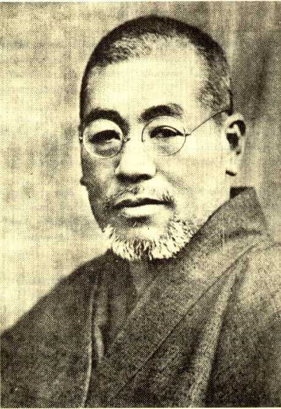

疲憊與壓力
忙碌之後想緩下來，留一段時間照顧自己。
靈氣療癒
給自己一段安靜的時間，留意身體與呼吸的感受。過程可依需求選擇接觸、無接觸或遠距方式。
如果你想在忙亂中留一段安靜時間，可以先了解靈氣的進行方式。過程不需特定信仰或脫衣，感受因人而異。
忙碌之後想緩下來，留一段時間照顧自己。
想在不被催促的過程中，留意自己的呼吸與感受。
想先了解接觸、無接觸或遠距方式，再確認適合自己的安排。

靈氣源自日本，依其傳統說法，由臼井甕男先生於 1922 年創立。
在靈氣傳統中，療癒師以雙手接觸或懸停進行。澤奎提供安靜、溫和的體驗；每個人的感受不同，不以靈氣取代醫療診斷或治療。
承襲臼井靈氣傳承，重視清楚說明與生活化運用。
非通靈、非神秘化商品包裝，回到身心安定本身。
療程約 50 分鐘。原價 NT$1700（首次體驗優惠價 NT$800）。教師及護理人員七五折，優惠價 NT$1300。